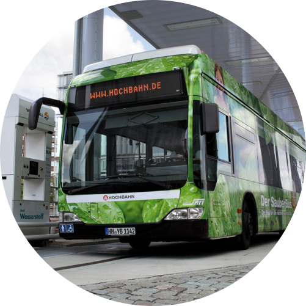
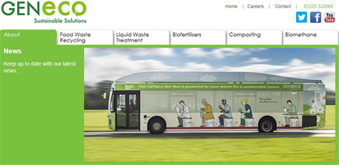
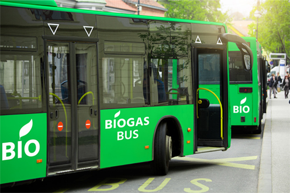
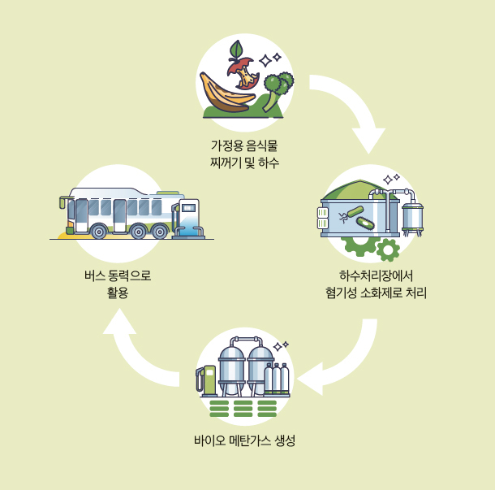
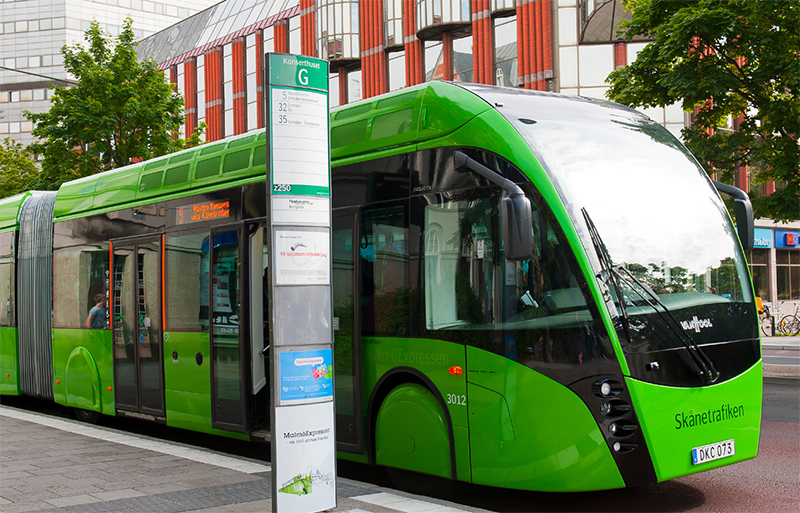
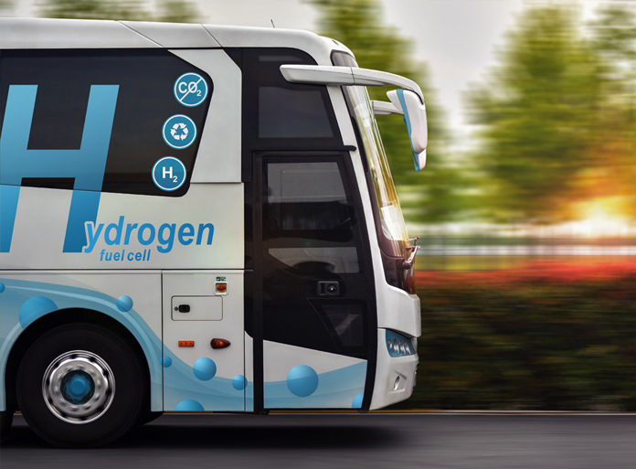
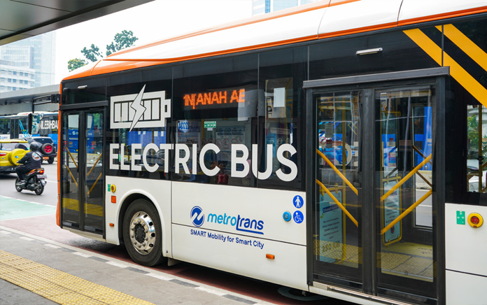
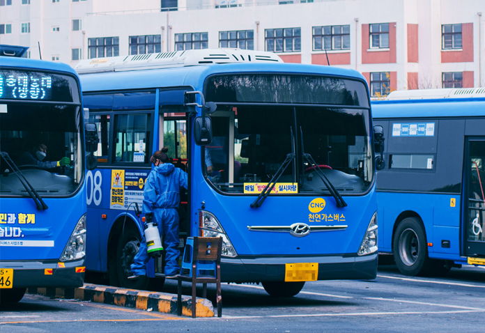
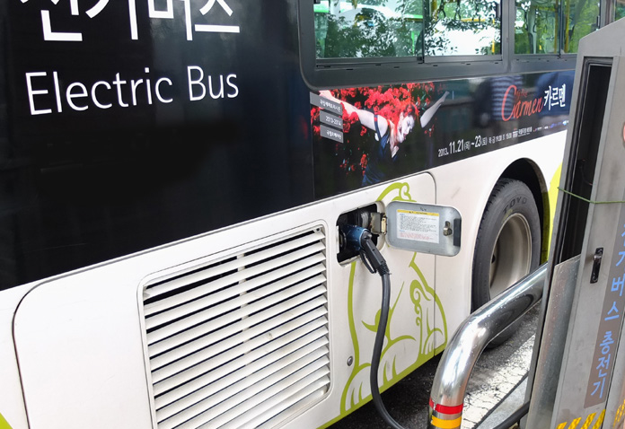

도심을 달리는 친환경 버스
영국의 바이오 버스와 국내 친환경 버스
탄소배출을 줄이기 위한 친환경적인 대중교통도 다양하게 생겨나고 있다.
영국은 이보다 한발 앞선 2014년 인분을 활용한 바이오 연료로 운행하는 친환경 버스를 도입했다.
영국의 바이오 버스 사례와 함께 현재 친환경 버스는 어디까지 왔는지 살펴본다.

인간이 살아가면서 배출하는 쓰레기를 연료로 쓴다면 얼마나 효율적일까? 쓰레기 처리비용 절감과 동시에 재생에너지 사용 효과까지, 일거양득의 효과를 가진 연료로 움직이는 버스가 실제로 영국에서 개발됐다.
지난 2014년 영국은 사람의 배설물과 음식물 쓰레기에서 나오는 바이오 메탄가스1)를 에너지원으로 하는 40인승의 친환경 ‘바이오 버스’ 운행을 시작했다. 영국 브리스톨 공항과 배스 시내 중심가 구간을 오가는 바이오 버스는 바이오가스 한 탱크로 최대 300km까지 주행할 수 있는데, 가스 한 탱크 분량은 5명의 사람이 1년간 배출하는 배설물과 음식물 쓰레기에서 얻을 수 있다.
바이오 버스는 디젤엔진에 비해 이산화탄소 배출량이 최대 30%까지 적고, 배기가스 배출량은 92%나 줄일 수 있다. 탄소 배출량이 일반 연료에 비해 현저히 낮다 보니 도심 속 공기 질 향상에도 도움을 주는 친환경 버스 사례로 전 세계적인 관심을 받기도 했다.
바이오 버스를 개발한 곳은 영국의 물 기업 웨섹스워터의 자회사 젠에코(GENeco)이다. 젠에코는 브리스톨 하수처리장을 위탁 운영하며 버려지는 쓰레기를 재활용해 지속 가능한 에너지를 생산하는 친환경 기업이다. 젠에코에 따르면 바이오 버스에 사용되는 가스는 바이오가스를 바이오 메탄으로 처리한 에너지원이다. 바이오 메탄 에너지는 가정과 차량 등에 쓰이는 에너지를 대체할 수 있는 탄소중립 에너지 모델 중 하나다.
 GENeco사 홈페이지  바이오버스 자료사진
 바이오 메탄가스 생산 과정
바이오가스: 생물에 의해 유기물이 분해되어 생성된 연료. 주로 하수나 동물의 분변 등을 분해할 때 생산되는 수소, 메탄과 기타 가스들을 의미한다. 지구상에서 자연 생산되는 바이오가스는 1억 8천만 톤으로, 이 바이오가스를 메탄가스 또는 수소가스로 바꾸면 화석에너지의 대체자원으로 활용할 수 있다.
바이오 메탄가스가 탄소중립의 방안으로 주목받는 이유는 총 세 가지다. 첫 번째, 바이오 메탄가스 연소로 방출되는 이산화탄소는 대기 중 이산화탄소 농도를 증가시키지 않는다. 바이오 메탄가스를 생성하는 과정에서 같은 양의 이산화탄소를 흡수하기 때문이다. 둘째, 하수슬러지2)에서 발생하는 메탄가스의 온실효과는 이산화탄소보다 21배 더 강력하다. 하지만 바이오가스는 하수슬러지에서 발생하는 메탄가스를 활용해 생산되기 때문에 생산 과정 자체만으로도 온실가스를 줄이는 효과가 있는 셈이다. 마지막으로 바이오 메탄가스를 생성하는 데 사용되는 음식물 쓰레기는 일반적으로 하수처리물보다 두 배 많은 바이오가스를 생성한다. 이는 환경적인 측면에서 볼 때 에너지 효율이 뛰어나다는 장점이 있다.
바이오 버스와 같은 친환경 버스는 비단 영국만의 이야기가 아니다. 유럽연합의 탄소중립 목표에 따라, 대부분의 유럽 국가가 친환경 버스를 빠르게 도입하고 있다. 코로나19 이후 유럽 내 전기버스 인프라 구축에 대한 투자가 증가하는 것으로 봐서는 전기 및 수소 버스, 연료전지 버스 등 다양한 무공해 버스의 수요는 계속해서 증가할 전망이다.
최근 가장 인기 있는 친환경 버스 종류는 전기버스다. 벨기에는 2035년부터 브뤼셀 도심 내에서 전기차, 수소차 및 바이오디젤 등 대체 연료 차량만 운행할 수 있다는 정책을 내놓았다. 이에 따라 벨기에는 전기차 중심의 자동차 생산설비를 확장해 전기버스와 전기 차량 생산에 총력을 기울이고 있다.
 스웨덴에서 운행 중인 수소 버스
 수소 버스 자료 사진
국내에서 가장 먼저 운행을 시작한 친환경 버스는 2002년 보급되기 시작한 CNG(압축천연가스) 버스이다. CNG는 천연가스를 200기압 이상의 고압으로 압축한 가스다. 유지비용이 적게 들지만 연료 충전량이 적어 주행거리가 짧다는 단점이 있어 시내버스 및 노선버스에만 활용할 수 있었다. 이어서 2007년 등장한 친환경 버스가 LNG(액화천연가스) 버스이다. LNG는 천연가스를 영하 162℃ 이하로 냉각시켜 액화시킨 형태다. 연소 시 대기오염물질이 거의 발생하지 않는다는 장점이 있지만 버스 연료로 사용할 경우 버스에 초저온 탱크를 달아야 하는데, 이때 제작되는 탱크 비용이 만만치 않다는 것이 단점이다. 하지만 한 번에 운행할 수 있는 거리가 최대 900km에 달해 고속버스나 화물차 등 장거리 운행이 필요한 버스 및 트럭에 활용해 왔다.
 전기버스 자료 사진
코로나19 이후에는 국내 친환경 버스의 판도가 달라지고 있다. 수소에너지를 활용한 수소 버스와 전기버스가 새로운 친환경 버스의 양대 산맥으로 떠오르는 중이다. 수소 버스는 오염물질 배출이 없고 공기 중 미세먼지 정화 능력이 있어 ‘달리는 공기청정기’라는 별명을 가진 친환경 버스다.
이미 서울시는 2018년부터 전기 시내버스 135대를 도입했으며 2020년부터 규모를 점차 늘려왔다. 또한 전기버스를 포함한 친환경 시내버스를 3천 대, 마을버스는 470대 수준으로 확충한다는 계획을 발표하기도 했다.
지난 2020년부터는 서울 시내버스 정규노선 370번에 수소 버스를 도입해 운행을 시작한다고 밝혔으며, 이에 따라 수소 차량 충전 인프라도 확대 운영에 나섰다. 서울시 발표에 따르면 370번 버스 1대당 연간 운행 거리인 8만 6천㎞를 수소 버스로 운행하면 총 41만 8,218kg(1km당 4.863kg)의 공기가 정화되는 효과가 있는 것으로 알려졌다. 서울시는 2025년까지 수소 버스를 1천 대 수준으로 늘리고, 수소충전소도 11개소를 구축한다는 방침이다. 서울시뿐만 아니라 대구시, 거제시, 고양시 등 전국의 지자체에서도 친환경 버스 도입 소식을 잇달아 전하며 탄소중립을 위한 발걸음에 동참하는 추세다.
 국내 CNG 버스
 도심에서 충전 중인 전기 버스